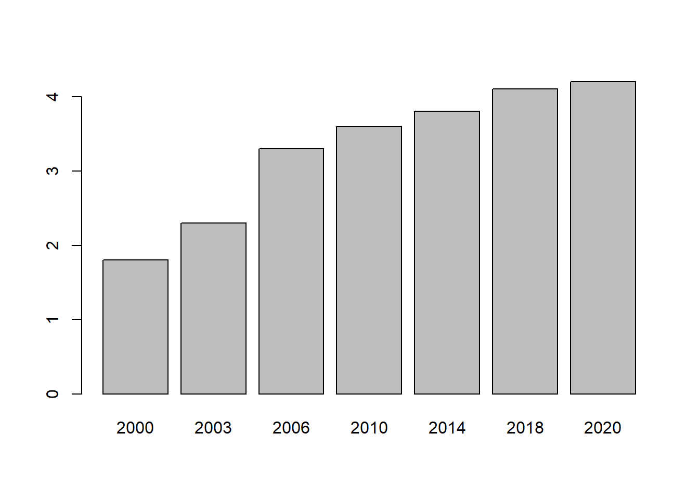
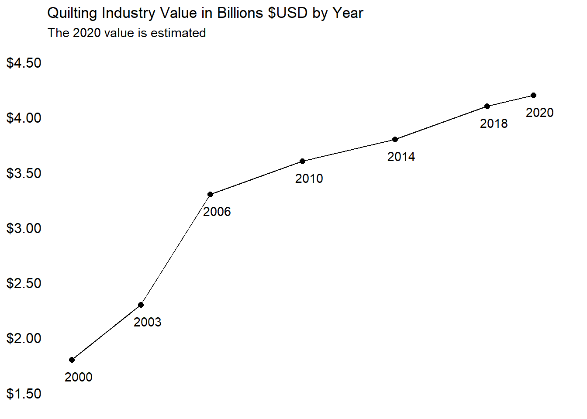

Show me the code
#create a dataframe from two vectors and print the dataframe
team = c("A", "B", "C")
profit = c(45,63,47)
df = data.frame(team, profit)
print(df) team profit
1 A 45
2 B 63
3 C 47#create a dataframe from two vectors and print the dataframe
team = c("A", "B", "C")
profit = c(45,63,47)
df = data.frame(team, profit)
print(df) team profit
1 A 45
2 B 63
3 C 47Two important ones:
Examine this code and its output:
# create two variables with values, store the sum in a third variable, and print the third variable
v1 = 5
v2 = 4
v3 = v1 + v2
print(v3)[1] 9When these statements are included, the code and any warnings, if present, are suppressed and not show in the rendered document. You will see the output but the code is missing. Sometimes you want to include it, but you’ll often not need to show the actual analysis to most report readers.
#| echo: false#| warning: false[1] 9The echo: false option disables the printing of code (only output is displayed).
The Craft Industry Alliance published a page which included a chart and data representing the size of the quilting industry from 2000 to 2020. The data were generated as part of the Quilting in America survey. Data for the year 2020 were estimated.
Let’s recreate the data and generate two versions of the plot. The first is a bar chart that resembles the original published chart. The second minimalistic chart uses a line to represent the continuous value over time. One downside of a bar chart can be that the spacing between the time points, if not even, can be misinterpreted. In this second chart, the dates are spaced by three, four, and two years which is better represented in the line chart.
#create the input data
#store the two data vectors
year <-c(2000,2003,2006,2010,2014,2018,2020)
value<-c(1.8,2.3,3.3,3.6,3.8,4.1,4.2)
#simple chart
#create a default bar chart with only default settings
barplot(value, names=year)
#line chart
#use the ggplot2 library for added functionality and options
library(ggplot2)Warning: package 'ggplot2' was built under R version 4.3.1
#store the data in a dataframe
df<-data.frame(year,value)
ggplot(df, aes(x=year, y=value)) +
geom_line()+
geom_point(colour = "#000000", size = 2)+
scale_x_continuous(breaks = seq(2000, 2020, by = 4), limits = c(2000,2021))+
scale_y_continuous(labels=scales::dollar_format(), breaks = seq(0, 5, by = 0.5), limits = c(1.5,4.5))+
theme_minimal()+
theme(
axis.title.x = element_blank(),
axis.title.y = element_blank(),
panel.grid.major = element_blank(),
panel.grid.minor = element_blank(),
axis.text.x = element_blank(),
axis.text.y = element_text(face="plain", color="#000000", size=12, angle=0)
)+
geom_text(
label=year,
nudge_x=0.3,
nudge_y=-0.15,
check_overlap=T
)+
labs(title="Quilting Industry Value in Billions $USD by Year",
subtitle="The 2020 value is estimated"
)